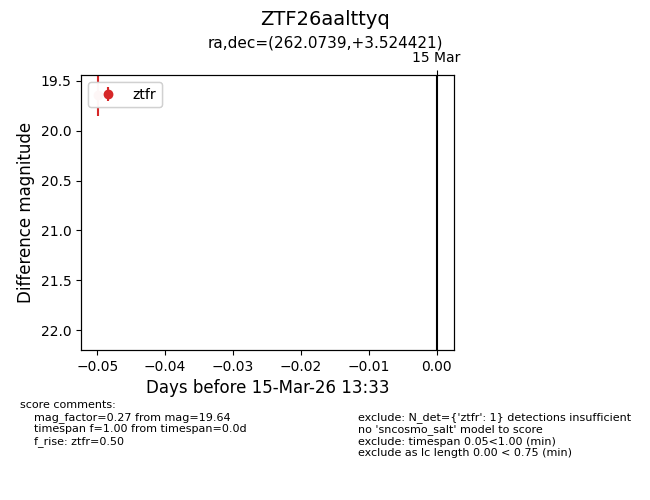
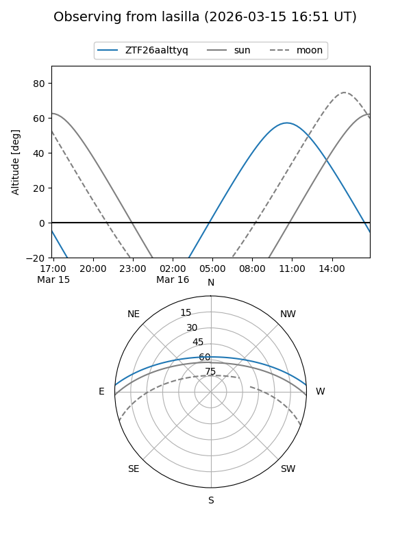
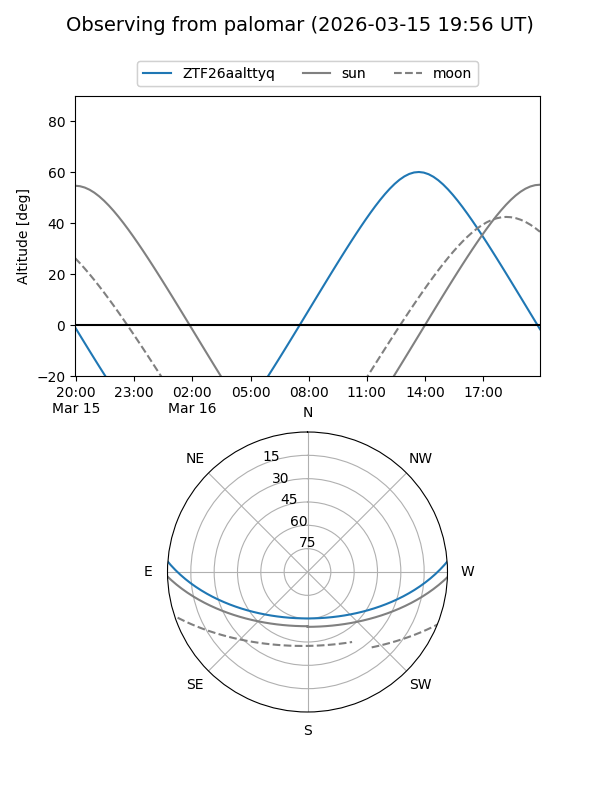

ZTF26aalttyq
Target ZTF26aalttyq at 2026-03-15 13:35
Aliases and brokers:
FINK: link
Lasair: link
ALeRCE: link
alt names
ZTF26aalttyq (ztf,fink_ztf)
Coordinates:
equatorial (ra, dec) = 262.0739,+3.52442
equatorial (HMS+DMS) = 17:28:17.73,+03:31:27.92
galactic (l, b) = (26.4028,+20.07596)
Flags:
Photometry:
last ztfr=19.64
1 ztfr detections
Lightcurve

Visibility


Additional plots